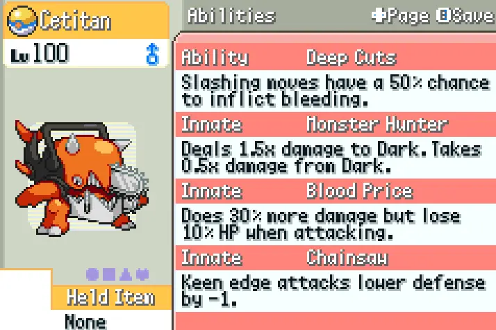
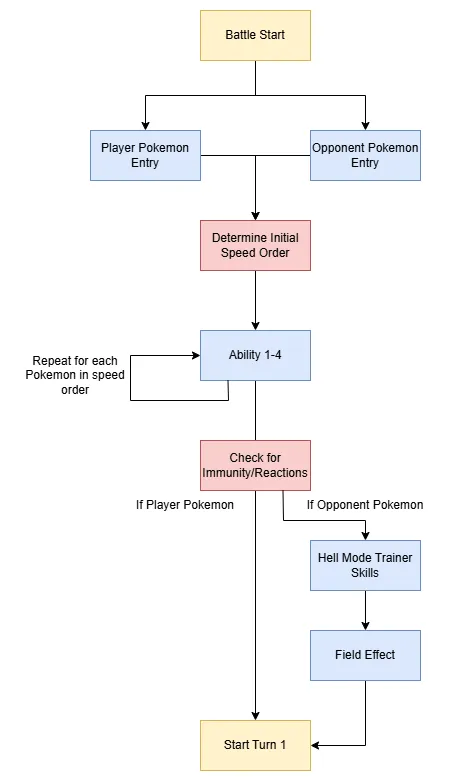
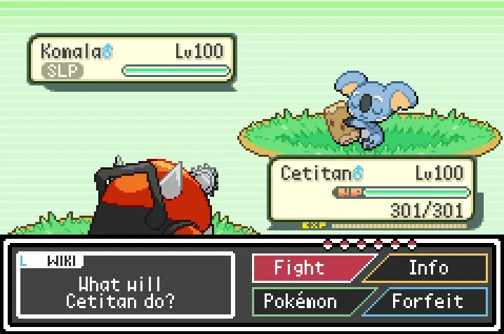

Process
Pokémon Elite Redux is a community-made Pokémon ROM hack. It is a full end-to-end overhaul of Pokémon Emerald. It features a completely reworked codebase in C++ and Assembly, implementing custom game-play mechanics and systems. The development environment is best described as an agile team, with different departments grouped by art, coding, and game design. My main role within the team is a battle system programmer. Typically, we create content in batches of updates to the game, or sprints in agile terms. One bug I'm proud of solving was where the Pokémon's abilities didn't trigger in the correct order during battles and looped infinitely.

When I dealt with this high-severity bug, I drew on my C++ expertise to isolate different parts of the codebase to attempt to find the cause of the issue. First, I used breakpoints and print statements to examine the game state at a high level, and then gradually inspected the lower-level systems and functions that seemed problematic. The main challenge I faced, however, was that the issue could not be traced to any single line of code. Still, I combed through every possibility across the entire battle system to find the cause.

After two days of debugging, I remembered a specific piece of wisdom about C++ integers. It was the fact that they could overflow or underflow if the value exceeded the bit capacity of the variable. I checked every bit-field and sure enough, one iterator variable was declared one bit too short for its purpose and constantly overflowed back to zero, creating the infinite loop. After fixing the erroneous variable, we were finally able to deploy the new update to production. This endeavor allowed me to learn every detail of a professional-level game system, and speaks to my pragmatic problem-solving capabilities and reliable programming knowledge.
